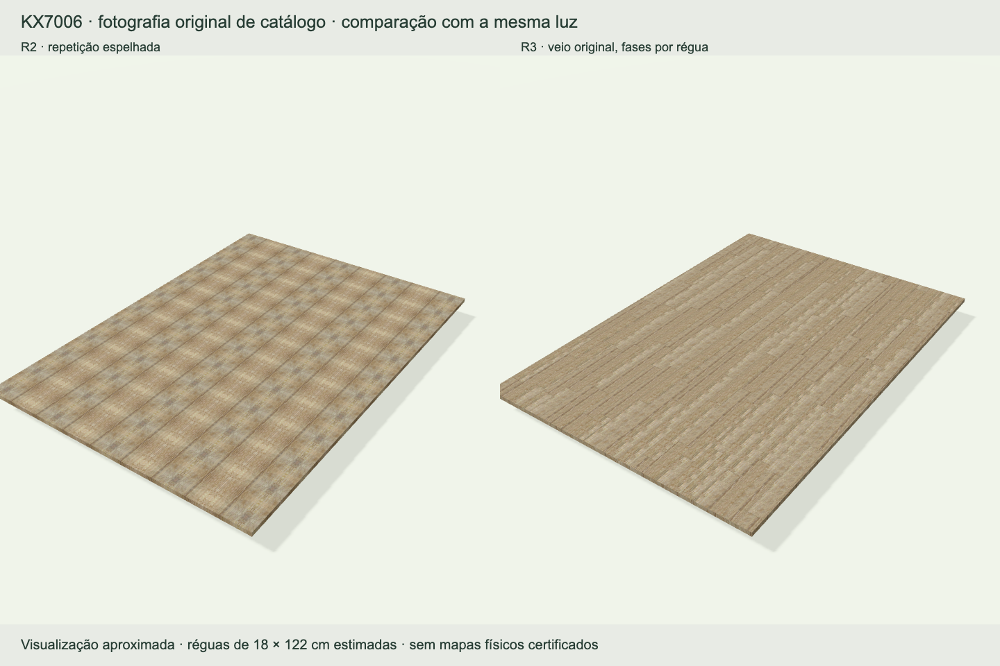
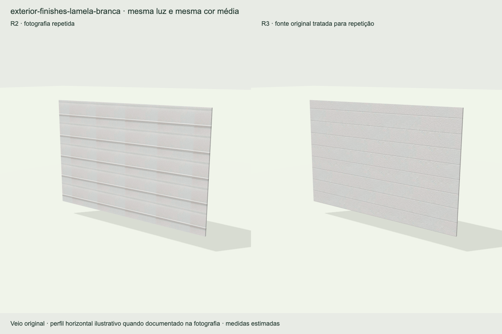
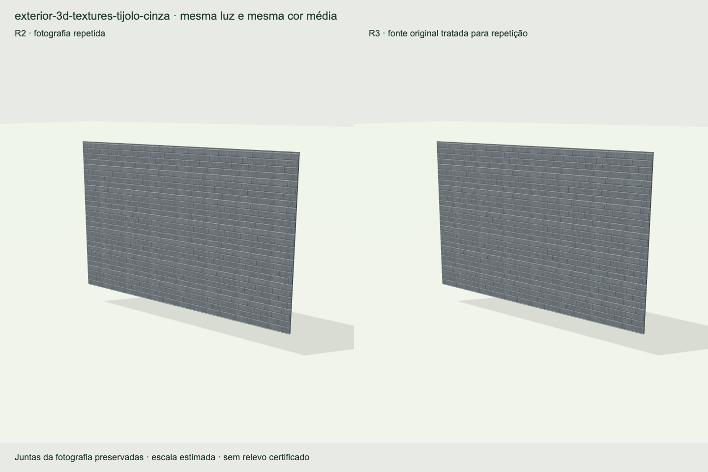
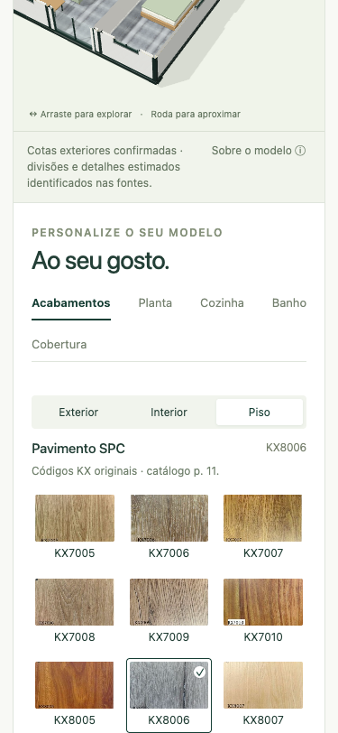
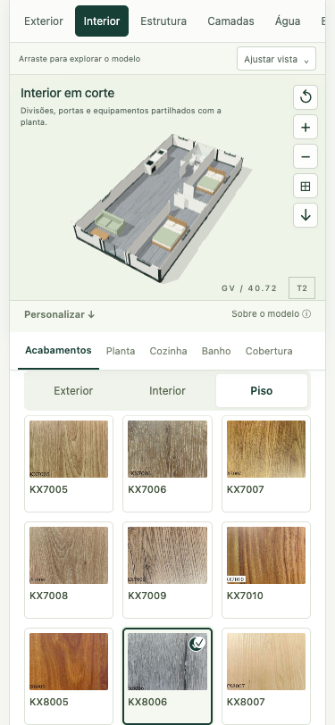
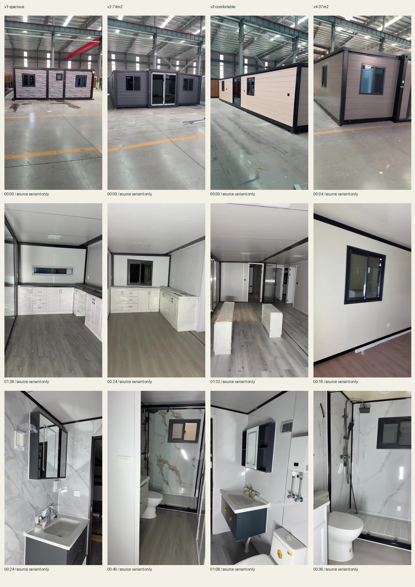

REVISÃO R3 · 10 SETEMBRO 2026
Materiais mais naturais.
Uma escolha mais simples.
Revisão do configurador existente, com novos pisos e paredes, navegação reorganizada e análise dos quatro vídeos recebidos. As medidas documentadas e as sete plantas mantêm a mesma fonte de dados.
71materiais com identidade e origem preservadas
49texturas derivadas na resolução nativa: 12 pisos e 37 paredes
48configurações verificadas geometricamente
4vídeos originais com 16 atalhos para detalhes
Piso: antes e depois.

Mesma amostra KX7006 e iluminação de comparação. As réguas de 18 × 122 cm são uma estimativa visual; o fabricante não forneceu as medidas físicas do produto.Nos 12 pisos, a autocorrelação mediana no período de repetição antigo desceu de 0,9925 para 0,0635. A média por canal dos mapas nativos foi preservada. O desvio médio de cor renderizada do KX7006 foi ΔE76 0,023; o maior dos 12 foi 0,583. Estas medições comparam os tratamentos da fotografia e não certificam a cor física.
Paredes: orientação e juntas.

Veio e cor média preservados; iluminação fotografada suavizada. Perfil superficial e espaçamento de apresentação estimados.
Nas alvenarias, as juntas mantêm a repetição regular. A perspectiva e as juntas irregulares da fotografia podem deixar pequenos desalinhamentos.
Escolher com o modelo à vista.

Antes: opções afastadas do modelo.
Depois: modelo, categorias e superfície disponíveis durante a escolha. Captura da fase de validação da organização.Em computador, o painel de escolhas tem deslocação própria e mantém o resumo acessível. No telefone, o modelo compacto permanece visível; se os controlos técnicos ocuparem demasiado espaço, a página recupera a deslocação normal.
Problemas, correcções e verificação.
| Problema | Causa | Correcção | Verificação |
|---|
| Exportações incoerentes durante alterações simultâneas | Configuração global relida depois de operações assíncronas. | Configuração do PDF congelada; captura cancelada se a casa mudar antes da imagem. | Reprodução T2→T3 durante exportação: imagem, planta, título e nome mantêm T2. |
| Comparador e resumo falhavam com pedidos demorados | Respostas antigas actuavam na janela actual; timeouts sem tratamento. | Identificação de cada pedido e recuperação explícita; resumo abre sem miniatura quando necessário. | Comparações sobrepostas e timeouts reproduzidos e retestados. |
| Piso com aspecto de manta | A repetição espelhada multiplicava manchas de iluminação da amostra. | Veio original distribuído por réguas desencontradas; bordas reconciliadas e iluminação ampla suavizada. | 12 comparações 3D, médias por canal preservadas e medição de periodicidade. |
| Emendas nas paredes | Brilho, nós e bordas da fotografia repetidos em grelha. | 37 derivados nativos: veio por fases nas madeiras; repetição regular nos tijolos; perfis rasos apenas onde há sulcos visíveis. | 37 comparações 3D; 49 recortes exactos verificados; 71 originais intactos. |
| Escolhas afastadas do modelo no telemóvel | Controlos altos e painel abaixo de uma cena de 430 px. | Modelo compacto, categorias e superfícies fixas durante a escolha. Com muitos controlos abertos, a página recupera deslocação livre. | Interacção a 375, 768 e 1440 px; teste adicional em ecrã 375 × 667. |
| Várias amostras pareciam seleccionadas | Uma regra anterior tornava visíveis todos os sinais de selecção. | Sinal apenas na amostra activa, coerente com o estado acessível. | Uma marca visível por grupo; alternâncias reais de amostra. |
| Camadas voltavam a separar-se após mudar uma opção | O valor zero era tratado como valor em falta. | Separação zero preservada ao reconstruir o modelo. | Reprodução antes/depois e regressão automatizada. |
| Camadas inferiores escondidas | O piso explodido ficava abaixo do plano de apoio. | Plano de apoio rebaixado na vista Camadas; enquadramento calculado pelos cantos do volume. | Camadas acima do apoio e cantos dentro do enquadramento. |
| Armação tapada por opcionais | Os revestimentos de telhado e alpendre continuavam opacos na vista Estrutura. | Revestimentos ocultos nessa vista; armação dos opcionais preservada. | Regresso ao Exterior repõe todos os revestimentos. |
| Gravação e recuperação incoerentes | Mensagem de gravação mesmo com acesso bloqueado; recuperação deixava a animação activa. | Estado de gravação verdadeiro; importação e recuperação passam pela mesma validação e param a animação. | Falhas de armazenamento, ficheiros inválidos, recuperação e recarregamento. |
| Cena vazia após falha numa alteração | Modelo anterior retirado antes de a reconstrução terminar. | Modelo novo preparado antes de substituir o anterior; alteração inválida conserva a configuração. | Falha controlada durante reconstrução e observação do estado/cena. |
| Câmara reposta ao mudar o tamanho da janela | A alteração de tamanho reaplicava o enquadramento predefinido. | Orientação preservada; rotação manual actualiza a indicação da perspectiva. | Órbita, redimensionamento, teclado, zoom e reposição. |
| Texturas indisponíveis sem recuperação localizada | Falha de rede ficava retida no carregamento. | Cor aproximada identificada e botão para tentar novamente as texturas. | Falha e recuperação de pedidos, descarte de recursos e cache limitado. |
Geometria e documentação.
Repetidas as verificações das 48 combinações permitidas e de 101 posições da montagem parcial. Não foram encontradas colisões accionáveis nesse âmbito. A verificação da canalização incluiu 486 subidas e passagens pelas três camadas reais de piso. A estrutura mantém o envelope de 6,22 × 11,80 m.
O que os vídeos acrescentam.

Imagens extraídas dos ficheiros originais. Todos têm resolução de 576 × 1 024 píxeis; não houve ampliação para simular detalhe adicional.As referências mostram juntas de painéis, rodapés, réguas, caixilharia e equipamentos. As versões identificadas como 74 m² e 20ft / 37 m² mantêm identificação própria. Não se transferiram as dimensões ou os vãos dessas variantes para as plantas base. Nenhum dos quatro vídeos documenta uma sequência de expansão.
Filmes da maquete revista.
Validação no navegador.
29 grupos de verificação concluídos, sem falhas abertas nos cenários exercitados. Sete plantas, sete vistas e 71 materiais em dois ciclos, com renderização efectiva de cada escolha. Cache limitada a 18 texturas; memória estável entre ciclos. Gravação, recuperação, importação, exportações abertas, teclado, indisponibilidade e perda de WebGL, pedidos de textura falhados e operações simultâneas foram exercitados.
No Chrome 153 com ANGLE Metal / Apple M4, a órbita medida atingiu 59,94 fps; em repouso estável não houve renderizações durante 1 segundo. Foram usados ecrãs emulados de 375, 768 e 1440 píxeis e um telefone curto de 375 × 667.
Reprodução na página publicada.
A verificação final detectou que o servidor publicado não respeita pedidos de intervalos dos MP4. Os vídeos passam a ser preparados integralmente no primeiro início de reprodução, com indicação de carregamento e apenas dois ficheiros mantidos em memória. Os capítulos confirmam o instante antes de reproduzir; sair da página cancela a preparação. As descargas continuam a usar os originais.
Âmbito e limites.
“72 m²” continua a designação comercial. O rectângulo exterior mede 73,396 m²; a área útil certificada não consta dos anexos. A posição exacta dos ressaltos do núcleo, alturas, espessuras, perfis, profundidade de alpendre e medidas interiores ainda incluem hipóteses identificadas.
Os materiais derivam de fotografias até 480 × 300 píxeis. Não existem mapas físicos medidos, cores RAL/NCS certificadas nem dimensões de régua confirmadas. A revisão reduz os defeitos de repetição sem recuperar informação ausente.
As instalações e a montagem são ilustrações. Faltam projectos de execução e documentação do mecanismo em transporte e durante o desdobramento do piso. A auditoria cobre os casos registados; a emulação móvel não substitui ensaios em todos os dispositivos.